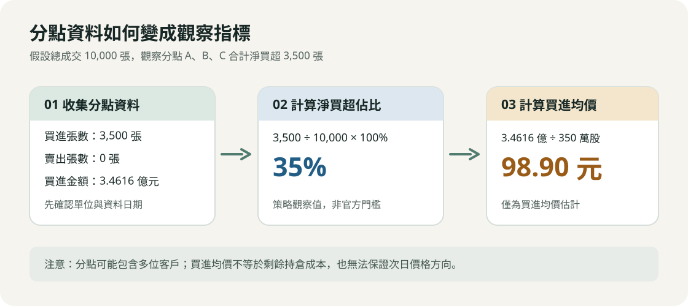
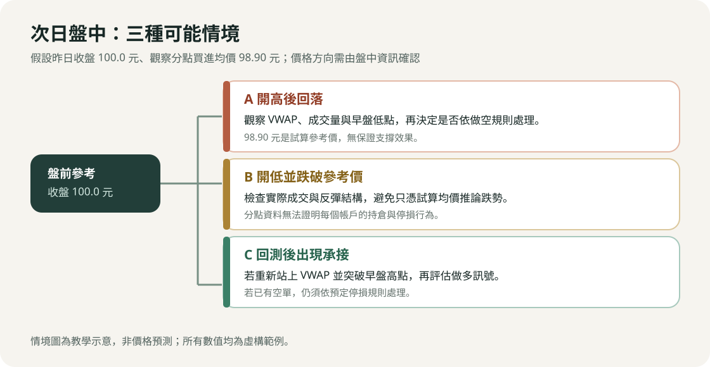
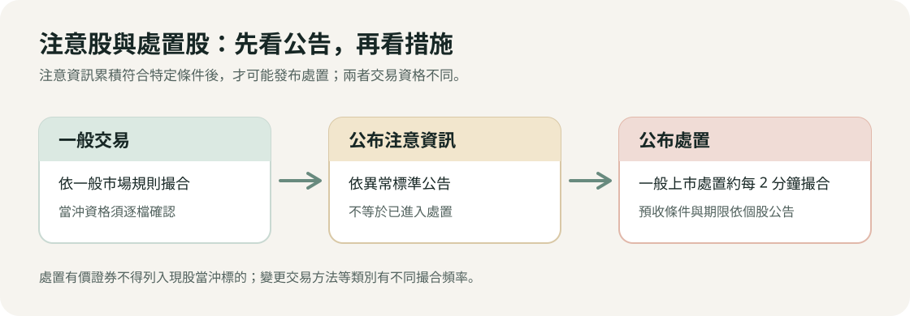

台股當沖（作多／做空）、隔日沖與處置股交易策略實戰手冊
目錄
- 全日交易時間軸作戰標準程序（Master Daily Timeline SOP）
- 盤前篩選與籌碼分析量化標準（SOP 0）
- 當沖做空實戰詳細步驟方法（Short SOP 1~4）
- 當沖做多實戰詳細步驟方法（Long SOP 1~4）
- 隔日沖主力操盤手法與散戶因應詳細步驟（Overnight SOP 1~2）
- 處置股交易機制與策略情境
- 盤中微觀盤口技術（Tape Reading 判讀步驟）
- 風控體系與部位計算公式（Risk & Position Sizing）
- 文獻與方法出處完整索引標記表
一、 全日交易時間軸作戰標準程序（Master Daily Timeline SOP）
[15:30 ~ 21:00] 盤後籌碼解析 ➔ 產出隔日「做空清單」與「做多清單」
↓
[08:30 ~ 09:00] 盤前試撮觀察 ➔ 過濾假漲停、預估開盤量、確認開盤價區間
↓
[09:00 ~ 09:15] 早盤第一波交戰 ➔ 隔日沖出貨 / 開高走低破均價空 / 巨量換手多
↓
[09:15 ~ 10:00] 盤中趨勢與二次轉折 ➔ 二度不過高量背離空 / 拉回均價線守穩多
↓
[10:00 ~ 12:30] 盤中震盪與秒沖 ➔ 權證大單點火秒沖 / 假鎖漲停炸板禿鷹空
↓
[12:30 ~ 13:20] 尾盤隔日沖點火 ➔ 主力 499 鎖漲停 / 散戶搭便車鎖碼
↓
[13:20 ~ 13:30] 強制平倉沖銷 ➔ 13:25 前所有當沖部位全數市價回補出清
二、 盤前篩選與籌碼分析量化標準（SOP 0）
- 【執行時間】：每日 15:30（證交所揭露券商分點買賣日報表）~ 21:00。
- 【方法出處】：
- 權證小哥：《權證小哥完全公開——權證暴賺勝經》——分點籌碼挑選強弱勢股。
- 蔡司（Tsai S）：《蔡司籌碼名師系列》——籌碼集中度與關鍵贏家分點篩選法則。
步驟 1：取得資料並設定基本流動性門檻
- 成交量門檻：近 5 日平均成交量 > 3,000 張，當日成交量 > 5,000 張（避免當沖遭遇流動性滑價或無法沖銷）。
- 波動度門檻：當日震幅 > 4% 或當日收盤漲跌幅 > 4%。
- 當沖標的確認：務必確認該股票具備**「現股當沖（得先賣後買）」**資格。
步驟 2：計算「隔日沖買超佔比」與「主力成本線」（做空觀察名單）
資料取得與計算方式
-
查詢證交所買賣日報表，或從看盤軟體取得個股券商分點進出資料，再篩選前五大買超分點。證交所說明，一般交易報表於每個交易日下午 3 時至 4 時產製；應以實際發布時間為準。
-
檢查名單中是否出現觀察中的隔日沖分點，並核對每個分點的買進、賣出張數與買進金額。分點資料包含券商自營及受託交易，無法單憑分點名稱判定交易者身分或次日必然賣出。
-
計算隔日沖買超佔比。以下 20%、30% 與 35% 是本文的策略篩選門檻，並非證交所認定標準。
隔日沖買超佔比 = 觀察分點淨買超張數合計 ÷ 當日總成交張數 × 100%- 初步觀察門檻：至少 20%。
- 優先觀察門檻：至少 30%；35% 為較嚴格的篩選值。
-
計算觀察分點的加權平均買進價。若買進金額單位為「元」、張數單位為「張」，須將張數乘以 1,000 股；有買有賣時，總買進均價不能直接視為剩餘部位的實際成本。
買進均價 = 觀察分點買進金額合計 ÷（觀察分點買進張數合計 × 1,000）

假設數值試算
以下分點名稱與數字均為虛構範例，僅用於說明計算方法。假設股票昨日收盤價為 100.0 元，當日總成交量為 10,000 張；其中三個觀察分點的資料如下：
| 分點 | 買進張數 | 賣出張數 | 淨買超張數 | 買進均價 | 買進金額（元） |
|---|---|---|---|---|---|
| 觀察分點 A | 1,800 | 0 | 1,800 | 98.5 | 177,300,000 |
| 觀察分點 B | 1,000 | 0 | 1,000 | 99.0 | 99,000,000 |
| 觀察分點 C | 700 | 0 | 700 | 99.8 | 69,860,000 |
- 淨買超張數合計：1,800 + 1,000 + 700 = 3,500 張。
- 買超佔比：3,500 ÷ 10,000 × 100% = 35%。
- 買進金額合計：177,300,000 + 99,000,000 + 69,860,000 = 346,160,000 元。
- 加權平均買進價：346,160,000 ÷（3,500 × 1,000）≈ 98.90 元／股。
- 相對收盤價的帳面變動：（100.0 − 98.90）÷ 98.90 × 100% ≈ 1.11%；此數值未計交易成本，也不能推定分點的實際剩餘持倉。
次日盤中情境示意

- 情境 A：開高後回落。若價格跌破盤中 VWAP，可依「做空 SOP 1」檢查成交量與停損位置；98.90 元僅是試算參考價，不保證形成支撐。
- 情境 B：開低並跌破參考價。先確認實際成交與反彈結構，不應只因跌破試算買進均價就推定會持續下跌。
- 情境 C：回測參考價後出現承接。若股價重新站上 VWAP 並突破早盤高點，可依「做多 SOP 1」評估；原有空單仍須遵守停損規則。
步驟 3：篩選「地緣分點 / 內部人連續吸籌」（做多觀察名單）
- 篩選過去 20~60 天股價於底部區間橫盤整理之個股。
- 檢查買超第一、二名分點是否為**「公司總部 / 廠區周遭之地緣券商」**（如新竹券商買進竹科 IC 設計股、台南/高雄券商買進在地螺絲扣件廠）。
- 門檻條件：近 5 日「籌碼集中度」 > 15%，且地緣券商過去 5~10 日每日皆呈現淨買超。
三、 當沖做空實戰詳細步驟方法（Short SOP 1~4）
【做空 SOP 1】獵殺隔日沖大戶（開高走低摜破均價線）
- 【方法出處】：
- 權證小哥：《權證小哥：贏家養成指南》、《權證小哥完全公開——權證暴賺勝經》
- CMoney 籌碼 K 線：隔日沖主力退場實戰專欄
- 【適用情境】：昨日漲停且隔日沖買超佔比 > 25%，今日早盤開高倒貨。
做空 SOP 1 詳細執行步驟
- Step 1：盤前 08:30~09:00 預判開盤情境
- 昨日隔日沖大戶鎖漲停，正常情況今日早盤將跳空開高 +1.5% ～ +3.5%。
- 若試撮階段開在平盤或開低，代表市場弱勢，倒貨賣壓將更加兇猛。
- Step 2：09:00~09:03 觀察第一根 1 分 K 棒與盤口五檔
- 開盤巨量：開盤前 3 分鐘成交量通常達到昨日全日量的 10% ～ 15%。
- 五檔盤口檢查：下檔委買一到五掛滿幾百張大單（假支撐誘多），但成交明細卻瘋狂跳出大筆內盤黑單（綠字），代表大戶正在以市價把籌碼直接倒給市價追進來的散戶。
- Step 3：確認進場觸發訊號（Trigger Signal）
- 訊號 1：股價摜破當日成交量加權平均線（VWAP 均價線）。
- 訊號 2：股價帶量摜破早盤第一根 1 分 K 棒的最低價（或第一根 5 分 K 棒低點）。
- 下單動作：觸發上述兩條件同時滿足時，以市價單或**委買一檔（內盤價）**迅速掛出「現股當沖先賣（空單）」。
- Step 4：設定精確停損價（Hard Stop Loss）
- 空單進場後，立即在看盤系統掛出反向停損觸價單（Stop Market Order）。
- 停損價格：設在「當日最高價（HOD）加 2 檔跳動（Ticks）」或「重新帶量站回 VWAP 均價線上 2 檔」。
- Step 5：執行停利回補（Take Profit）
- 第一階段停利（平倉 50%）：當股價回測至昨日收盤價（平盤價 0%）或跌破主力昨日買進成本線時，市價買回一半部位。
- 第二階段停利（平倉剩餘 50%）：時間來到 09:25~09:35，成交量萎縮、連續 3 根 1 分 K 棒不再破底且均線走平時，全數回補出場。
【做空 SOP 2】假鎖漲停「炸板」禿鷹放空法
- 【方法出處】：
- 自由人 Freeman（李堯勳）：《台指期當沖交易密技》——極短線盤口破線禿鷹策略
- 非凡電視台《錢線百分百》：台股當沖實戰專案
- 【適用情境】：盤中股價衝上漲停，主力虛張聲勢掛假單鎖碼，但遭遇大賣單敲開。
做空 SOP 2 詳細執行步驟
- Step 1：監控漲停板排隊張數之動態變化
- 股價拉至漲停價（+10%），掛在漲停價之委買排隊單（排隊買單）開始出現**異常抽單（撤單）**現象。
- 例如原本排隊 5,000 張，在 30 秒內快速萎縮至 1,500 張、800 張。
- Step 2：偵測炸板（敲開）瞬間
- 成交明細連續出現單筆 100~300 張的大筆市價賣單（黑單），直接將剩餘排隊委買單全數吃光，成交價滑落至 +9.5%、+9.0%。
- Step 3：進場下單
- 下單時機：在漲停板被吃穿跌至 +9.0% ～ +8.5% 瞬間，以**市價（Market Order）**敲進空單。
- 預期利潤：吃散戶追高多頭踩踏的多殺多恐慌波，通常股價會在 3~5 分鐘內急速下殺至 +5.5% ～ +6.5%。
- Step 4：停損與緊急自救（最高警戒）
- 唯一且嚴格的停損點：若主力只是洗盤，下方又有巨量買單湧入將股價重新拉回漲停價（+10%），必須立刻以市價回補停損！
- 理由：若被漲停鎖死，當天無法在 13:30 前買回，將被迫進入「借券/券差程序」，每日借券費率最高達 7%，且隔日極可能再開高，產生毀滅性損失。
【做空 SOP 3】權證大戶早盤倒貨＋自營商砍現貨避險單空法
- 【方法出處】：
- 權證小哥：理財寶「主力收購權證監控表」實戰教學
- 【適用情境】：前一日大戶大量買超認購權證（隔日沖），今日一早出脫引發自營商系統性程式賣現貨。
做空 SOP 3 詳細執行步驟
- Step 1：盤前確認自營商避險現貨庫存
- 前一日盤後查詢「三大法人買賣超」，若「自營商（避險）」買超金額排名前列，且對照「主力收購權證監控表」確認為短線隔日沖大戶所為。
- Step 2：09:00~09:05 鎖定自營商程式賣單
- 早盤 09:01 起，權證大戶在權證市場掛市價出清認購權證。
- 發行券商自營商的造市避險演算法被系統強制觸發，必須在現貨市場掛出對應的現貨賣單以維持 Delta 中立。
- 成交明細特徵：現貨成交明細每隔 1~2 秒跳出一筆中型賣單（如連續 22 張、33 張、50 張的固定程式單），推動價格急跌。
- Step 3：進場與回補
- 進場：現貨跌破開盤第一根 1 分 K 低點時，直接追空進場。
- 回補：自營商避險砍單通常在 09:15~09:20 結束。當現貨成交明細中的定額程式單停止出現，五檔出現單筆大買單護盤時，立即全數回補獲利了結。
【做空 SOP 4】日內 VWAP 破線與二度攻高量價背離放空法
- 【方法出處】：
- 巨人傑（GiantJie）：《資產破億的當沖客》——日內動能衰竭與期望值交易
- 金湯尼（Kim Tony）：《金湯尼盤中速讀術：冰火能量圖》
- 【適用情境】：早盤衝高但無實質主力鎖碼，高檔動能衰竭轉為空方。
做空 SOP 4 詳細執行步驟
- Step 1：繪製高點與早盤 VWAP
- 股價在 09:00~09:20 創下當日最高價（High of Day, HOD），隨後拉回跌破均價線（VWAP）。
- Step 2：觀察二次反彈（雙重頂 / 假突破確認）
- 股價自低點反彈，試圖挑戰早盤高點 HOD。
- 背離檢視：第二波攻高時的 1 分鐘成交量只有第一波攻高時的 30% ～ 50%（量價背離）；五檔委賣單大單壓頂，外盤吃單速度緩慢。
- 股價未能過 HOD，或剛創微幅新高（過高不到 1~2 檔）立刻爆出一根實體大黑 K 吞噬。
- Step 3：下單與停損
- 進場點：跌破二次攻高之起漲頸線，或再次帶量跌破 VWAP 時進場放空。
- 停損點：設在二次攻高之最高點上方 1 檔。
四、 當沖做多實戰詳細步驟方法（Long SOP 1~4）
【做多 SOP 1】隔日沖「強換手 / 軋空」順勢多法
- 【方法出處】：
- 巨人傑（GiantJie）：盤口微觀籌碼吸收（Absorption）與量價結構
- 蔡司（Tsai S）：CMoney 籌碼 K 線名師專題
- 【適用情境】：昨日有隔日沖大軍大買，今日早盤巨量倒貨卻跌不破平盤與均價線，市場出現真主力接盤。
做多 SOP 1 詳細執行步驟
- Step 1：盤前鎖定具備強題材或產業熱門之隔日沖標的
- 昨日買超前五名有凱基台北、美林等隔日沖分點，但該標的當前屬於全市場最強主流族群（如 AI、重電、散熱等）。
- Step 2：09:00~09:15 檢驗「巨量抗跌」訊號
- 早盤開盤 15 分鐘成交量超過昨日總成交量的 25% ～ 40%。
- 關鍵異相：隔日沖主力瘋狂倒出數千張賣單，但股價完全跌不破平盤，且回測始終守在當日均價線（VWAP）之上（顯示有更大手筆的買盤在均價線上方將所有賣單一口不剩全部吃光）。
- Step 3：09:15~09:30 觀察量縮整理與浮額洗淨
- 09:15 之後，隔日沖出貨告一段落，成交量開始顯著萎縮。
- 股價在 VWAP 之上進行狹幅橫盤整理（橫盤箱體），下檔委買單開始逐步向上墊高。
- Step 4：進場點觸發
- 五檔突然連續跳出多筆 50~100 張以上的大筆外盤紅單（市價買單）。
- 股價帶量突破早盤 09:00~09:20 的高點（HOD）或突破盤整箱體上緣。
- 下單動作：市價或委賣一檔掛進「現股當沖先買（多單）」。
- Step 5：停損與出場設定
- 停損點：設在早盤橫盤整理箱體的下緣，或跌破當日 VWAP 下方 2 檔。
- 出場點：此種強換手形態極易直奔漲停，若漲停鎖死且排隊單 > 3,000 張，可抱至尾盤；若漲停開開關關或未鎖死，於 13:00~13:15 出清獲利了結。
【做多 SOP 2】地緣分點連續吸籌初升段帶量點火多
- 【方法出處】：
- 蔡司（Tsai S）：《蔡司籌碼名師系列》——地緣券商追蹤法
- CMoney 籌碼 K 線：地緣券商與主力分點雷達戰法
- 【適用情境】：低檔盤整標的，盤後連續數日發現地緣券商集中買超，今日盤中發動攻擊。
做多 SOP 2 詳細執行步驟
- Step 1：確認突破關鍵頸線價位
- 盤前標註該股票過去 20~60 天盤整區間的最高點（頸線壓力位）。
- Step 2：09:00~09:20 偵測異常攻擊量
- 09:15 前成交量已達到過去 5 日均量的 1 倍以上。
- 五檔委賣單開始被單筆百張以上的大單持續吃掉。
- Step 3：進場下單
- 最佳買點：股價帶量突破盤整區頸線價位的瞬間；或是突破後拉回測試頸線支撐、踩穩當日 VWAP 不破並再度轉折向上時。
- Step 4：停損與停利
- 停損點：跌回盤整頸線下方 1.5% 或摜破當日 VWAP。
- 停利點：地緣主力做的是真波段，當天收實體長紅機率極高。當沖可在漲幅達到 +4% ～ +6% 或尾盤 13:10~13:20 分批獲利了結。
【做多 SOP 3】投信認養第 1~3 天「拉回均價線回測買多」
- 【方法出處】：
- 股市阿水（Water）：《股市阿水：布林通道戰法》——法人籌碼與盤中進出
- 權證小哥：投信認養與季底作帳操作專欄
- 【適用情境】：投信剛開始進場買超之中小型績優成長股。
做多 SOP 3 詳細執行步驟
- Step 1：盤前篩選法人建倉初升股
- 昨日投信買超佔比 > 5%，且投信持股率 < 5%（代表剛開始認養，非高檔出貨期）。
- Step 2：盤中等待回測 VWAP
- 投信多採演算法被動吃貨，早盤股價通常開小高後隨大盤波動拉回。
- 當股價拉回至 VWAP 均價線附近（距離 VWAP 0.3% ～ 0.5% 範圍內）。
- 五檔盤口檢查：下檔委買單有穩定的中型委買單（如每檔 30~50 張）均勻鋪墊，成交明細未見異常爆量摜殺。
- Step 3：進場與出場
- 進場點：回測碰觸 VWAP 未跌破，隨後出現外盤小量連續紅單轉折向上時進場作多。
- 停損點：跌破 VWAP 超過 1% 立即停損。
- 出場點：下午 13:00~13:25 為法人程式單補單拉抬的高峰期，在尾盤急拉時市價賣出平倉。
【做多 SOP 4】權證大單盤中點火「自營商避險連動抬轎多」（極短線秒沖）
- 【方法出處】：
- 權證小哥：理財寶「盤中權證大戶即時監控表」軟體實戰法
- 【適用情境】：盤中突然有權證大戶狂敲某檔股票的認購權證，引發券商自營商在現貨市場買進避險。
做多 SOP 4 詳細執行步驟
- Step 1：即時監控軟體警示設定
- 設定監控條件：單一股票在 30 秒內，認購權證成交金額超過 500 萬元或成交口數超過 3,000 口。
- Step 2：秒級反應下單（反應時間需在 3 秒以內）
- 軟體跳出警示音時，迅速切換至該股票現貨看盤視窗。
- 觀察現貨外盤委賣單是否開始被單筆百張以上買單瘋狂吞噬。
- 下單動作：立刻以市價（Market Order）或委賣二檔敲進現貨多單。
- Step 3：極短線獲利了結（秒沖出場）
- 自營商避險買盤推升現貨的速度極快，通常在 1~3 分鐘內直線噴發 +2% ～ +4%。
- 出場訊號：一旦權證成交明細不再跳出大筆認購單，且現貨外盤推力停滯（出現內盤小黑單），立刻以市價賣出平倉，絕不戀戰留倉。
五、 隔日沖主力操盤手法與散戶因應詳細步驟（Overnight SOP 1~2）
【主力操盤手內部作業手冊 SOP】主力如何執行「隔日沖」？
- 【文獻來源與出處】：
- 《財訊》雙週刊：調查報導〈揭密台股隔日沖神秘部隊：虎尾幫與嘉義幫〉
- 非凡電視台《錢線百分百》：籌碼名師專案解密
- 券商法人自營部與高頻量化團隊實務運作流程
[階段 1：11:00~12:30 標的掃描]
利用即時量化選股雷達，掃描全市場：
1. 漲幅達 +6% ~ +8% 之強勢股。
2. 族群具備題材熱度、當日成交總額在前 50 名內。
3. 距離漲停板剩餘委賣單總量在 1,500 ~ 3,000 張以內（易於一網打盡）。
[階段 2：12:30~13:20 資金切分與點火掃盤]
1. 分散至 3~8 個不同證券分公司帳戶（如凱基台北、美林、元大土城等）。
2. 單筆拆分為 499 張上限單（台股系統單筆限制），於 10~30 秒內連續發射 3~6 筆 499 買單。
3. 一口氣將上檔所有委賣單全數市價掃光，將價格直線釘在漲停板（+10%）。
[階段 3：13:20~13:30 假單鎖碼與市場心理操控]
1. 漲停瞬間，各分點立刻送出巨額委買單在漲停價排隊（如掛進 10,000 ~ 30,000 張委買）。
2. 製造「漲停買不到、明日必開高」的市場狂熱心理。
3. 強迫早盤放空之當沖散戶與融券放空者在尾盤市價買回停損（進一步強化鎖碼穩定度）。
[階段 4：次日 08:30~09:15 倒貨出脫清倉]
1. 08:30~08:59 試撮階段：掛進巨額委買單製造「試撮漲停」假象，吸引散戶於開盤前掛高價搶買。
2. 08:59:45~08:59:55：於試撮結束前數秒迅速撤銷（抽單）所有虛擬買單。
3. 09:00:00：利用昨日慣性跳空開高（通常開高 +2% ~ +5%）。
4. 09:00~09:10：趁散戶與法人買盤進場追價瞬間，以市價或外盤大筆賣單直接倒光手中所有股票，實現獲利了結。
【散戶操作 SOP】散戶如何「搭隔日沖便車」做多？
- 【方法出處】：
- 金湯尼（Kim Tony）：《只買一張也能賺錢的散戶當沖密技》——順勢搭便車戰法
- 【適用對象】：盤中反應極快、能嚴格執行紀律之極短線交易者。
散戶操作 SOP 詳細執行步驟
- Step 1：12:30~13:10 偵測主力點火
- 觀察自選股中漲幅達到 +7% ～ +8.5% 的股票，成交明細突然跳出連續 499 買單（或連續數十筆 50 張外盤買單），價格直線向上衝刺。
- Step 2：掛單跟進
- 動作：在股價來到 +8.5% ～ +9.2% 尚未完全鎖死前，立刻以市價單敲進；或者在漲停價位出現的第一秒，立刻送出「漲停價委買單」參與排隊。
- Step 3：檢查是否「鎖死」
- 13:25 檢視漲停板上的排隊委買量。
- 安全標準：漲停排隊委買量必須大於當日總成交量的 10% 以上（例如成交量 2 萬張，排隊至少 2,000 張以上），才算安全鎖死。
- 異常撤退：若尾盤出現排隊單快速減少或炸板敲開，不論盈虧立即在 13:25~13:30 市價砍單出場，絕不可抱過夜。
- Step 4：次日早盤出場 SOP（唯一動作：賣出）
- 隔日開盤（09:00:00）無論跳空開高多少（例如開高 +2% ～ +4%），開盤前預先掛好委託賣單（或開盤第一時間市價賣出）。
- 鐵律：搭便車隔日沖的目的僅在賺取隔日的「跳空溢價」，開盤 5 分鐘內必須清倉完畢，切不可貪戀後續漲幅而把隔日沖做成套牢長抱。
六、 處置股交易機制與策略情境
本節整理五種處置股交易情境。制度部分以證交所現行處置作業要點第 6 條與現股當沖標的說明為準；實際標的、期間及措施應查證交所公布處置有價證券或櫃買中心公告。

6.1 先確認處置措施
- 注意與處置的差別：被列為注意股不等於已進入處置。連續三個營業日達特定注意標準，或連續五日、十日內六日、三十日內十二日達相關標準等情形，才可能依第 6 條發布處置；以當日公告為準。
- 撮合頻率：證交所現行第 6 條對一般上市處置有價證券，首次與三十個營業日內再次處置均規定約每 2 分鐘撮合一次；變更交易方法等類別另有不同頻率，特別處置也可能調整。
- 預收款券：首次處置，單筆達 10 交易單位或當日多筆累計達 30 交易單位時，依規定預收全部買進價金或賣出證券；三十個營業日內再次處置，原則上所有委託均預收。信用交易及特定專戶另有條文規定，須依個別公告確認。
- 現股當沖資格：證交所明列處置有價證券不得列入現股當沖標的。委託前應再次檢查券商系統的標的資格及處置公告。
6.2 五種策略情境
以下為原稿策略的觀察與決策框架，不是處置規則或經驗勝率。分點買賣資料無法辨識單一交易者，也無法保證價格方向。
情境 1：量縮鎖漲停
- 觀察：比較處置前後成交量、漲停委買量與實際成交；同時檢查題材和處置剩餘期間。
- 進出場：若已有部位，先規劃可接受虧損與賣出條件。量縮鎖漲停不代表次日仍能漲停；處置期間若跌停且買盤不足，停損單也可能無法成交。
情境 2：接近注意或處置門檻
- 觀察：依官方注意資訊、處置作業要點和歷史價格，估算可能觸發的條件；價格以外的成交量及其他例外情形也須檢查。
- 進出場：把「可能進處置」當成情境，不能只用單一臨界收盤價判定，也不能從尾盤委託推定特定主力意圖。
情境 3：處置初期急跌後回測均線
- 觀察：記錄 20 日均線、處置前買進均價估計及分盤成交量，確認是否出現實際承接。
- 進出場：若分批買入，預先設定部位上限及退出條件；均線和分點估算價都不保證支撐，需考慮賣單無法即時成交的風險。
情境 4：處置結束前與解除處置當日
- 觀察：先核對公告的處置截止日，並在解除處置當天重新確認現股當沖資格、開盤量價與 VWAP。
- 進出場：原稿提出「出關前卡位」與「出關首日跌破 VWAP 放空」兩種方向；兩者均須待盤中條件成立後評估，不能將出關當成固定開高或開低訊號。
情境 5：以股票期貨觀察同一標的
- 觀察：先查期交所股票期貨標的名單，並確認契約仍可交易。現貨受處置時，期交所可能依股票期貨處置保證金措施調高保證金：一般首次處置為原級距的 1.5 倍、再次處置為 2 倍；特別處置可能另有調整。
- 進出場：比較股期與現貨價格時，須計入基差、保證金、流動性及兩市場不同的撮合節奏。股期並非不受現貨處置影響，也不能把預估撮合價當作已成交價格。
6.3 分點判讀與流動性風險
- 分點買賣超：可比較處置前後分點買賣方向與成交量，但買超不等於持股、賣超也無法證明「主力倒貨」；單一分點可能代表多位客戶。
- 委託與成交：處置股採分盤撮合，委託簿的排隊量不等於實際成交量。大額委託可撤銷，應以成交結果與官方公告核對。
- 資金與退出：預收款券會占用可用資金；跌停或量縮時，實際成交價可能偏離預設停損價。部位大小應按可承受損失與可能無法立即退出的情境決定。
七、 盤中微觀盤口技術（Tape Reading 判讀步驟）
- 【方法出處】：
- 巨人傑（GiantJie）：《資產破億的當沖客》——五檔微觀結構與成交跳動解讀
- 自由人 Freeman：盤口跳動節奏分析
7.1 五檔掛單「真假單」辨識對照表
【誘多出貨盤（放空訊號）】 【誘空吃貨盤（作多訊號）】
委賣五檔（稀疏） 委賣五檔（厚重巨量壓頂）
┌───────┬──────┐ ┌───────┬──────┐
│ 101.5 │ 15 │ │ 101.5 │ 850 │
│ 101.0 │ 22 │ │ 101.0 │ 1200 │
│ 100.5 │ 30 │ │ 100.5 │ 950 │
├───────┼──────┤ ├───────┼──────┤
│ 100.0 │ 800 │ ◄── 假大單誘多 │ 100.0 │ 35 │
│ 99.5 │ 1500 │ │ 99.5 │ 20 │
│ 99.0 │ 2200 │ │ 99.0 │ 18 │
└───────┴──────┘ └───────┴──────┘
委買五檔（厚重假支撐） 委買五檔（稀疏無假單）
實質盤況： 實質盤況：
下檔看似支撐強大，但成交全是大黑單 上檔看似賣壓沉重，但成交全是大紅單
砸內盤，大買單一被砸到就快速抽單。 一口口吃掉大賣單，且價格跌不下去。
7.2 冰山委託（Iceberg Order）偵測步驟
- 觀察某個特定整數關卡（如 100.0 元）。
- 五檔顯示 100.0 元的委買量只有 20 張。
- 盤面連續砸下 5 筆市價 50 張的賣單（合計 250 張），但 100.0 元始終沒有被砸穿，五檔上的數字依然顯示 15~20 張。
- 判讀：這代表大戶採用冰山買單（Iceberg Order），底層設定每消耗 20 張自動補進 20 張，代表該價位有強大實質買盤防守。
八、 風控體系與部位計算公式（Risk & Position Sizing）
- 【方法出處】：
- 巨人傑（GiantJie）：期望值交易系統與部位風控模型
- 台灣證券交易所（TWSE）：現股當沖風險防範作業準則
8.1 單筆部位大小計算公式（1% 風險原則）
每一筆交易進場前，必須先決定停損點，再根據可承受之風險金額計算進場張數：
最大容忍虧損額 = 交易總資金 × 1%
可交易股數 = 最大容忍虧損額 ÷（每股價差風險 + 每股預估手續費與稅）
- 實例計算：
- 總資金：1,000,000 元（1% 最大容忍虧損 = 10,000 元）。
- 進場放空價：100 元，設定停損價：102 元（停損差額 2 元）。
- 可放空張數：
10,000 ÷（2,000 + 400）≈ 4張（4,000 股）。 - 嚴格禁止以「帳戶可用額度上限」隨意下滿。
8.2 每日最大停損額（Max Daily Drawdown）
- 設定每日最大虧損金額（如總資金之 2%）。
- 執行標準：當日虧損一旦達到該金額，系統立即強制停止下單權限，並立刻關閉看盤軟體，當日絕不允許進行任何一筆報復性交易。
九、 文獻與方法出處完整索引標記表
| 編號 | 策略 / 手法名稱 | 主要創始 / 推廣代表人物 | 著作 / 專欄 / 文獻出處 | 關鍵技術指標 |
|---|---|---|---|---|
| 1 | 獵殺隔日沖大戶放空法 | 權證小哥 | 《權證小哥完全公開——權證暴賺勝經》、《權證小哥：贏家養成指南》、理財寶專欄 | 隔日沖分點佔比、VWAP 均價線、開盤巨量 |
| 2 | 假鎖漲停炸板放空法 | 自由人 Freeman (李堯勳) | 《台指期當沖交易密技》、《台指期天王自由人的極短線交易》 | 委買排隊單撤銷、炸板瞬間市價追空 |
| 3 | 自營商避險連動空/多法 | 權證小哥 | 理財寶「主力收購權證監控表」軟體實戰教學、Smart 智富專訪 | 認購權證爆發大單、自營商 Delta 避險程式單 |
| 4 | VWAP 與微觀盤口當沖法 | 巨人傑 (GiantJie) | 《資產破億的當沖客》、鏡週刊深度專訪、非凡新聞專案 | VWAP 均價線、五檔假單、Iceberg 冰山單、期望值部位管理 |
| 5 | 隔日沖強換手軋空多法 | 巨人傑 / 蔡司 | 巨人傑盤口微觀籌碼吸收實戰語錄、蔡司籌碼 K 線名師專題 | 隔日沖巨量倒貨抗跌、VWAP 守穩、過高追多 |
| 6 | 地緣券商追蹤做多法 | 蔡司 (Tsai S) | 《蔡司籌碼名師系列》——地緣券商追蹤法、CMoney 專家專欄 | 公司總部周遭券商、籌碼集中度、頸線突破 |
| 7 | 投信認養初升段做多法 | 股市阿水 / 權證小哥 | 《股市阿水：布林通道戰法》、Smart 智富月刊專欄 | 投信持股率 <5% 首買、拉回 VWAP 接多 |
| 8 | 盤中冰火能量與多空指標 | 金湯尼 (Kim Tony) | 《只買一張也能賺錢的散戶當沖密技》、《金湯尼盤中速讀術》 | 委託買賣筆數差、能量差、搭便車鎖漲停 |
| 9 | 處置股交易機制 | 臺灣證券交易所 | 處置作業要點第 6 條、現股當沖標的說明 | 處置條件、撮合頻率、預收款券、當沖資格 |
| 10 | 量縮鎖漲停與注意門檻情境 | 本文情境整理 | 第六章策略情境 1、2；制度依證交所公告 | 成交量、處置公告、退出條件 |
| 11 | 處置初期急跌與均線回測情境 | 本文情境整理 | 第六章策略情境 3；非實證勝率 | 均線、分點資料、流動性 |
| 12 | 處置結束與解除處置情境 | 本文情境整理 | 第六章策略情境 4；應核對個股公告 | 處置截止日、VWAP、當沖資格 |
| 13 | 處置股股票期貨觀察 | 臺灣期貨交易所 | 股票期貨標的名單、處置保證金措施 | 契約資格、保證金、基差與流動性 |
| 14 | 處置期間分點與委託判讀 | 本文情境整理 | 第六章分點判讀與流動性風險；非交易者身分認定 | 分點買賣超、委託與成交差異 |
| 15 | 隔日沖主力部隊生態調查 | 財訊雙週刊調查報導組 | 《財訊》雙週刊專題報導〈揭密台股隔日沖神秘部隊：虎尾幫與嘉義幫〉 | 尾盤 499 點火鎖碼、次日 08:30 試撮誘多抽單 |
| 16 | 逐筆交易與借券違約規範 | 臺灣證券交易所 (TWSE) | 臺灣證券交易所作業規章手冊、現股當沖作業辦法 | 逐筆撮合、7% 標借費率、違約申報程序 |
免責聲明：本手冊整理之各項策略、步驟、參數與分點數據僅供學術研究與交易策略開發參考。金融市場交易具備高度財務風險，投資人應建立獨立風控機制，自負盈虧責任。